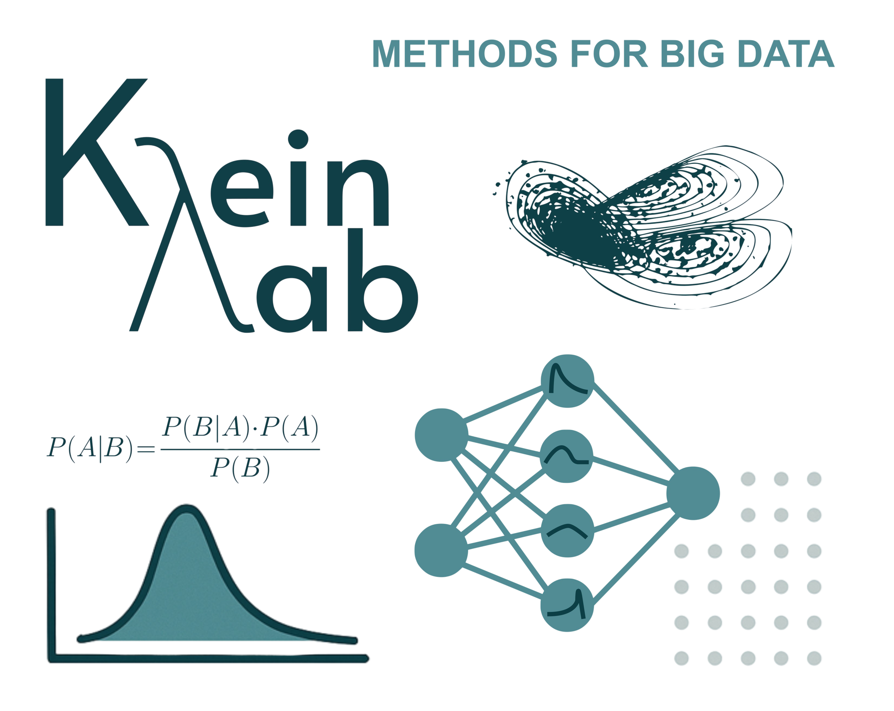

Welcome to the Research Group Methods for Big Data led by Prof. Dr. Nadja Klein and located at the Scientific Computing Center, Department of Informatics, Karlsruhe Institute of Technology. In addition to teaching graduate courses on Bayesian statistics and machine learning, we are involved in several research projects.
We are welcoming applications for PhDs and Postdocs (in particular also with a focus on probabilistic learning & methods for big data). For more information, see here.
Feel free to follow us on LinkedIn and to check out our blog and podcasts (see below)!
